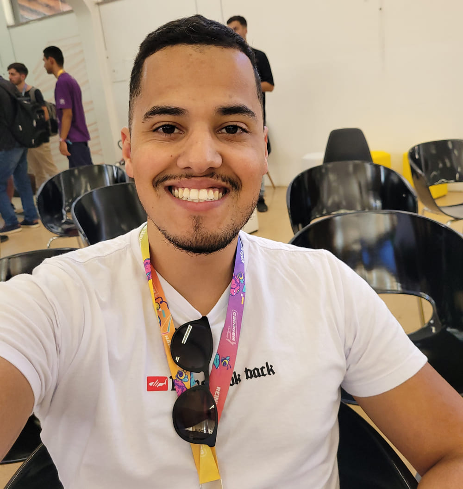

<aside id="about">
  <div class="container">
    

    <div class="container-content">
      <h3>Quem sou</h3>
      <p class="name">Lucas Costa</p>
      <p class="subtitle">Desenvolvedor front-end</p>
      <p class="description">
        Meu nome é Lucas Costa, sou graduado em engenharia de software pela
        faculdade EAD unicesumar e atuo a dois anos como desenvolvedor front-end
        na empresa PD soluções em tecnologia.
        <br />
        <br />
        Tenho conhecimento em Javascript, Typescript, HTML5, CSS, React Js,
        NextJs, comunicação com API's rest, conexão websocket, Material UI,
        styled components, SASS, git, github, gitlab, gitflow, etc.
        <br />
        <br />
        Estou sempre em busca de aprimorar meus conhecimentos e agregar um maior
        valor as pessoas por meio da tecnologia!
      </p>
      <div class="social-media">
        <ng-icon name="bootstrapInstagram" class="icon"></ng-icon>
        <ng-icon name="bootstrapLinkedin" class="icon"></ng-icon>
      </div>
    </div>
  </div>
</aside>
